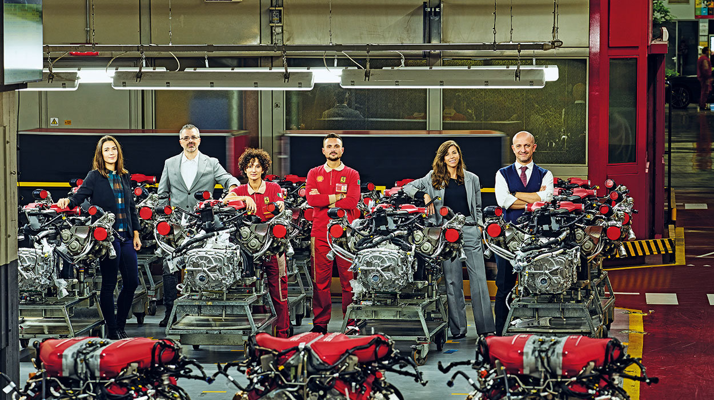
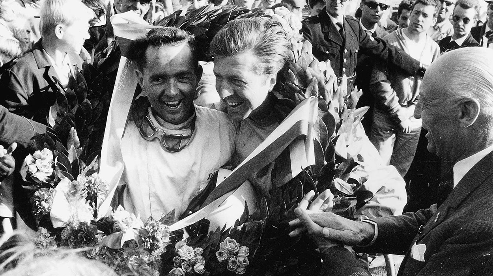

La nueva edición limitada del Ferrari Daytona SP3 se inspira en los legendarios prototipos deportivos de los años 60

Una pasión sin igual en todo el mundo
Ferrari es un gran equipo. Así lo demuestran las fotografías de estas páginas, en las que empleados de todos los departamentos posan en distintas zonas de la fábrica

Sucedio un Septiembre
El motor V6 «Dino» dominó la temporada de 1961, que culminó con su victoria en el Gran Premio de Italia en Monza, donde Ferrari selló su primer doble triunfo en los campeonatos de pilotos y constructores de Fórmula 1
El nacimiento de un nuevo icono
La nueva edición del Ferrari Daytona SP3 se inspira en los legendarios prototipos deportivos de los años 60. La Finali Mondiali, anfitriona de algunos de los purasangres de carreras más extremos que ha producido Ferrari, es siempre una fiesta de automovilismo de alto rendimiento en el circuito de Mugello, en las colinas de la Toscana.
Este fin de semana el evento también ha acogido el lanzamiento del Ferrari Daytona SP3, una edición limitada del TS que, a pesar de estar recién salida de la fábrica de Maranello, viene con un pedigrí de competición totalmente consolidado que se remonta a los años dorados de Ferrari en las carreras, los años 60. Desde el principio, el Ferrari Daytona SP3 de motor central parece haber nacido para la pista. El motor V12 atmosférico de 6,5 litros ubicado justo detrás de la cabeza del conductor es el motor de combustión interna más potente fabricado por Ferrari hasta la fecha, con una potencia de 840 CV capaz de catapultar el coche de cero a 100 km/h en 2,85 segundos y de cero a 200 km/h en 7,4 segundos. ¿Velocidad máxima? 340 km/h.
El Ferrari Daytona SP3 es la segunda incorporación a la serie Icona, un programa diseñado para celebrar la historia de Ferrari reinterpretando el estilo atemporal de los coches más emblemáticos de la marca con un efecto radicalmente moderno al utilizar los materiales y las tecnologías más innovadoras disponibles en la actualidad. Los Monza SP1 y SP2 fueron las primeras encarnaciones del programa en 2018, pero, mientras aquellos coches invocaban las seductoras imágenes de las barchettas de Ferrari de los años 50, el nuevo Ferrari Daytona SP3 se inspira en el espíritu de los prototipos deportivos de los años 60, una década que ahora se considera la época dorada de las carreras de ruedas carenadas y un punto de referencia perdurable para generaciones de ingenieros y diseñadores. Aunque hay varios Ferraris icónicos que han influido claramente en el diseño del Ferrari Daytona SP3, incluidos el 350 Can Am y los 512, es quizá el 330 P3 el que más ha marcado no solo su diseño, sino nombre mismo. La insignia « Ferrari Daytona SP3 » es un guiño directo a la ya legendaria victoria de 1967 en las 24 Horas de Daytona, cuando Ferrari logró una de las hazañas más espectaculares de su historia automovilística, con tres Cavallino Rampante cruzando la meta casi al unísono y haciéndose con los tres primeros puestos en territorio de Ford. En primer lugar un 330 P3/4, en segundo un 330 P4 y en tercero un 412 P.
Es este pedigrí de competición el que, cuando se combina con la gran cantidad de avances tecnológicos de Ferrari, convierte el nuevo Ferrari Daytona SP3 en un valioso nuevo miembro de la serie Icona.
Ferrari,Alessandro Pier Guidi y James Calado, ganadores del gampeonato mundial de pilotos de resistencia FIA 2021 para pilotos LMGTE.
El anuncio oficial del resultado de las 8 Horas de Bahréin confirma a Ferrari como el ganador del Campeonato Mundial de Fabricantes de Resistencia de la FIA 2021. También confirma la victoria de Alessandro Pier Guidi y James Calado en el Campeonato Mundial de Pilotos de Resistencia de la FIA 2021 para Pilotos LMGTE. Estos títulos son la continuación de los ganados en 2017, también en el circuito de Sakhir.
La decisión de Porsche de no proceder con la apelación tras el rechazo de la protesta presentada al final de las 8 horas confirma el resultado de la pista. En consecuencia, el equipo # 51 AF Corse 488 GTE, primero bajo la bandera a cuadros, también es el ganador oficial del Campeonato Mundial de Resistencia de la FIA.
Ferrari reclama así su sexto título mundial de constructores después de 2012, 2013, 2014, 2016 y 2017, mientras que Alessandro Pier Guidi y James Calado se llevan su segundo laurel para ir con el de 2017, de nuevo al final de las 8 Horas de Bahréin. La temporada de Ferrari contó con tres victorias, todas en las carreras más largas del calendario: las 8 Horas de Portimão, las 8 Horas de Bahréin y, sobre todo, las 24 Horas de Le Mans, que una vez más resultaron decisivas en la concesión del título gracias a los puntos extra que se ofrecen.
Este triunfo se suma al título del FIA Endurance Trophy ganado por AF Corse y François Perrodo, Nicklas Nielsen y Alessio Rovera, ya oficiales al final de la carrera
Una pasión sin igual en todo el mundo.
Aquí no hay distinciones entre las diferentes áreas, departamentos y puestos: todos formamos parte de esta gran empresa, que el año que viene celebra su 75 aniversario.
Por eso hemos decidido cambiar un poco las cosas con las fotografías del Anuario 2021. Seleccionamos una serie de lugares en toda la empresa y pedimos a nuestros colegas que posaran para nosotros en zonas en las que no trabajan necesariamente a diario.
Así, hay ingenieros en el taller de pintura con los reconocibles monos rojos de seguridad, personal de ventas entre los maravillosos V8 en la línea de montaje de motores, abogados reunidos frente al Centro de Desarrollo de Productos, personas que suelen estar en la pista fotografiadas esta vez en interiores, en el área de mecanizado, etc.
No son operarios o ejecutivos, mujeres u hombres, ni de diferentes nacionalidades.
Solo gente.
Porque Ferrari es un gran equipo.
Este es un tema especialmente importante para nuestro CEO, Benedetto Vigna, que se incorporó al equipo en septiembre. Para este reportaje se reunió con sus colegas en lo que muchos consideran el corazón de Ferrari: la estación 19 de la línea de montaje de los motores de 8 cilindros. Se la conoce como «la estación del matrimonio», porque aquí es donde se coloca el motor en el chasis.
«Llegué a Maranello tras 26 años en una empresa de alta tecnología», cuenta Vigna. «A lo largo de toda mi carrera profesional, he escuchado una y otra vez la palabra "pasión" sobre los más diversos entornos de trabajo.
Y es cierto: hay muchos lugares en los que la gente trabaja apasionadamente, sin descanso, creyendo por completo en lo que hace. Sin embargo, no creo que la pasión de la gente que trabaja en Ferrari tenga parangón en ningún lugar del mundo.
Eso fue lo que más me llamó la atención cuando llegué. Es una pasión aún más profunda y sentida que une a todos en todos los niveles. La gente aquí está realmente enamorada de la marca, se percibe un sentido de pertenencia muy especial. Esto es lo que nos permite luchar constantemente y con éxito por la innovación y la perfección.
Con la motivación adecuada, todo el mundo tiene el potencial de volverse más curioso y atento, incansable en la búsqueda de la excelencia».
Tercero en la carrera, tercero en las construcciones.
La temporada 2021 de la Scuderia Ferrari Mission Winnow finalizó con un piloto en el podio gracias al gran tercer puesto de Carlos Sainz y otro tercer puesto para el equipo en la clasificación del Campeonato de Constructores. Charles Leclerc también terminó en los puntos, en décimo lugar. La Scuderia es, por tanto, la escudería que más veces ha metido a sus dos pilotos entre los diez primeros, haciéndolo en 17 de las 22 carreras.